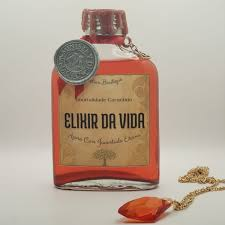
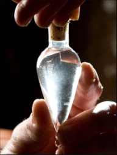

Poções
-
Amortentia
A Amortentia é a poção do amor mais poderosa que existe no mundo mágico. Ela é reconhecida por sua cor nacarada e vapor que se eleva em espirais distintas. A poção tem um cheiro diferente para cada pessoa, correspondendo ao que cada um acha mais atraente. A poção não cria amor verdadeiro, mas sim uma poderosa obsessão ou infatuação. Os ingredientes exatos da Amortentia são desconhecidos, mas é sugerido que inclua coisas como pétalas de rosa esmagadas, que são conhecidas por serem usadas em feitiços de amor, e um pedaço de pele da pessoa amada para fortalecer o efeito. Para preparar a poção ela deve ser mexida no sentido horário por sete vezes, depois no sentido anti-horário por sete vezes, e o processo precisa ser repetido para manter a eficácia da poção.

-
Elixir da Vida
O Elixir da Vida é capaz de prolongar a vida do bebedor indefinidamente, desde que continue a ser consumido regularmente porém, a frequência com que ele precisa ser consumido é desconhecido. Qualquer pessoa que se baseie no Elixir vai morrer se eles não puder obter mais Elixir. O Elixir também tem a capacidade para reencarnar,, de alguma forma, uma alma sem corpo ainda presa à terra, principalmente devido às poderosas propriedades com base na vida mágica. Seu modo de prparo é desconhecido mas, a principal substância necessária para criar o Elixir da Vida é produzida pela Pedra Filosofal.
 -
Felix Felicis
A Felix Felicis, também conhecida como “sorte líquida”, é uma das poções mais cobiçadas no mundo bruxo. A poção supostamente garante que todas as ações do bebedor resultem em um resultado favorável, tornando-o “sortudo” em tudo o que tentar. A preparação da Felix Felicis é extremamente complexa e demorada, e inclui ingredientes raros como trevo de seis folhas e chifre de unicórnio em pó. A poção deve ser preparada sob condições muito específicas, incluindo, mas não se limitando a, fases da lua e temperatura exata durante o processo de fermentação. Há uma teoria no mundo bruxo que sugere que a Felix Felicis pode funcionar como um placebo. A ideia é que, ao acreditar que estão sob o efeito da “sorte líquida”, os bebedores se tornam mais confiantes e tomam decisões mais ousadas, o que pode levar a resultados positivos independentemente da poção ter um efeito mágico real ou não.
 -
Poção do Morto-Vivo
A Poção do Morto-Vivo é uma poção que induz um sono tão profundo que o bebedor pode ser confundido com um morto. A preparação da Poção do Morto-Vivo requer ingredientes como asfódelo em pó e infusão de losna, além de outros componentes raros e específicos. O processo de criação desta poção é complicado e exige um controle preciso do tempo e da temperatura, bem como a adição exata de cada ingrediente em momentos específicos.
-
Poção Embelezadora
A poção de embelezadora aumenta a atratividade da aparência física do bebedor e a massa muscular é aprimorada e aperfeiçoada. A poção remove todas as imperfeições físicas (ou seja, verrugas, manchas, cicatrizes, manchas, pelos indesejados, etc), seus dentes branqueiam e tornam-se perfeitos, sua voz torna-se mais atraente, sedutora, melódica e sedutora, seu aroma torna-se extremamente agradável e convincente. A poção confere ao bebedor um corpo perfeito, com uma pele lisa e perfeita, cabelos longos e sedosos perfeitos, corpos e músculos de proporções douradas e bem como suas "dotações". Os ingredientes típicos incluem Asas de fada, Orvalho da manhã, Pétalas de rosa, Alchemilla, Pelo de unicórnio e Raízes de gengibre. Não se Tem conhecimento sobre o preparo da poção.